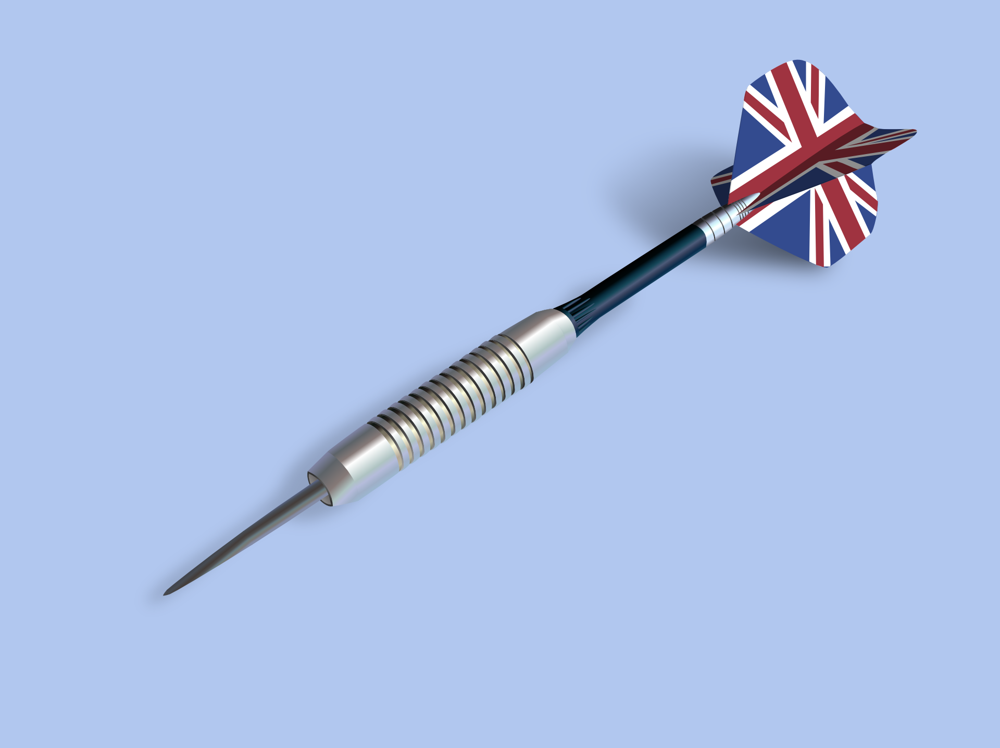

Cada jugador intenta puntuar en cada número del 1 al 20 y en el centro de la diana en orden. Cada jugador puede lanzar tres dardos por turno. En caso de alcanzar el número deseado, dicho jugador deberá intentar acertar el siguiente número de la secuencia. El primer jugador que alcance la diana será el ganador.
La primera vez que se mencionan los dardos en los libros de historia fue en 1314. Entre batalla y batalla los soldados, aburridos, se ocupaban en otros menesteres, uno de los cuales era competir entre ellos lanzando astillas u otros materiales punzantes a las tapas de los barriles de vino. Posteriormente utilizaron la sección de un tronco de árbol colgado entre unas ramas. Los mismos círculos concéntricos de la madera servían para definir las diferentes puntuaciones. Durante mucho tiempo le consideraron como un deporte practicado por los militares. Era muy apreciado ya que mantenía la puntería de los soldados, entrenando el lanzamiento de armas ligeras contra el enemigo. La historia de los dardos empezó en los años 60, cuando comenzó el boom turístico en las zonas costeras españolas. En muchos locales con asiduos clientes ingleses, o que incluso los dueños eran ingleses, se empezaron a colocar dianas para entretenimiento de los clientes. En poco tiempo ya se iniciaban algunas pequeñas ligas locales, con la finalidad de que los clientes fueran conociendo a otros jugadores, y empezara a subir el nivel de juego. No obstante, la mayor difusión de este juego vino con la invención de las dianas electrónicas en Estados Unidos, en los años 80 (hasta los 90 no llegaron a España), que simplificó mucho el juego, ya que la diana electrónica lleva automáticamente la puntuación, sin necesidad de tener que usar papel y bolígrafo como en las dianas tradicionales o "de pelo".
